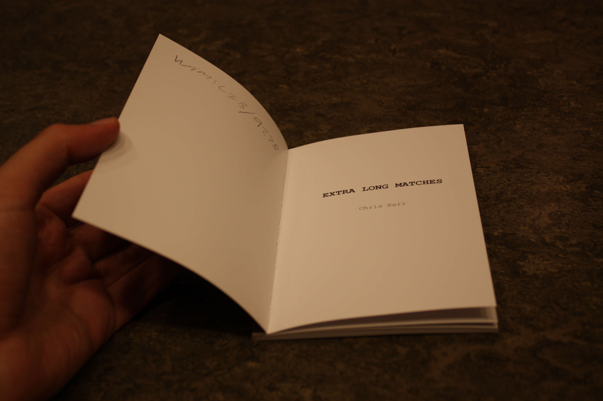

Extra Long Matches presents a sequence of visual poems inspired by the longest tennis match in history: Isner-Mahut at the 2010 Wimbledon Championships. This conceptual project presents a tennis court made out of Extra Long Matches branded matchsticks. This court is treated like a scoreboard for points in the first and last game of the Isner-Mahut match: matchsticks are removed to expose the numbers latent in the geometry of the court. As the marathon match progresses, the matchsticks become increasingly burnt out.
Purchase Extra Long Matches from Penteract Press (published in 2022).
Extra Long Matches is part of the collection at the Kenneth Ritchie Wimbledon Library at the All England Lawn Tennis and Croquet Club. Many thanks to the librarians. This makes the book a permanent spectator at Wimbledon.
To promote Extra Long Matches on social media, I created a series of photos posing copies of the book as parts of a tennis court. I also made postcards featuring a few of the visual poems from the book, which I distributed to businesses near the Wimbledon Championships.
The poet Marian Christie kindly mentioned Extra Long Matches in two blog posts:
The poet Jesica Davis included Extra Long Matches in her 2023 reading list.